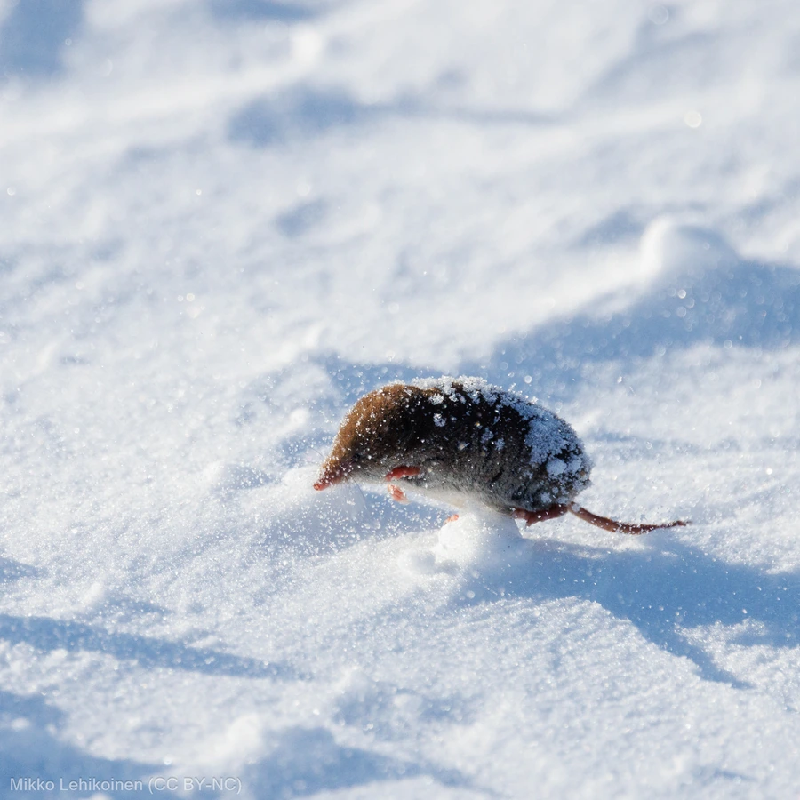

哺乳动物 · 动物界
鼩鼱 Sorex araneus

体形似鼠而吻部尖长的小型食虫类，代谢极快、几乎不停进食，唾液带轻微毒性，在落叶层中捕食昆虫与蚯蚓。
- 分类
- 门脊索动物门纲哺乳纲目食虫目科鼩鼱科属鼩鼱属
- 栖息环境
- 森林、草地、农田、沼泽与花园的落叶层、草根与石缝
- 地理分布
- 欧洲大部、俄罗斯西部至西伯利亚，英国与北欧诸国
- 保护级别
- IUCN 无危（LC）；中国境内有近缘种分布
物种志
鼩鼱体形细长，成年体长 6–9 厘米，尾长 3–5 厘米，体重仅 5–14 克，是欧亚大陆最常见的小型食虫类之一。吻部尖长而灵活，眼小，耳壳不明显，毛被短而密，背毛呈棕褐或暗灰色，腹面浅灰，齿尖呈红色，这是铁质沉积在牙釉质中的结果。它四肢短小，五指有爪，常发出尖锐的吱吱声。
鼩鼱栖息于森林、草地、农田、沼泽与花园的落叶层和草丛中，昼夜均活动，靠嗅觉与触觉在缝隙里搜寻昆虫、蜘蛛、蚯蚓、蜗牛和小型脊椎动物。它的代谢率极高，每天需进食相当于体重 80%–90% 的食物，饥饿数小时即可能死亡，因此几乎整日奔波觅食。唾液腺分泌物具轻微毒性，可让较大的昆虫或小鼠行动迟缓。每年繁殖 2–3 胎，孕期约 19–21 天，每胎 5–8 仔。冬季不冬眠，会收缩身体与骨骼以减少消耗。
形态与习性
- 体长约 6–9 cm，尾长 3–5 cm
- 体重约 5–14 g，随季节与食物状况波动
- 食性昆虫、蜘蛛、蚯蚓、蜗牛与小型脊椎动物
- 繁殖每年 2–3 胎，孕期约 19–21 天，每胎 5–8 仔
- 代谢每日进食量约占体重的 80%–90%，饥饿数小时可致死
- 齿色齿尖呈红色，因牙釉质中沉积铁质
- 寿命野外通常仅 1–1.5 年
趣味知识
- 鼩鼱的牙尖是红色的，那是牙釉质里沉积了铁元素。
- 它一天要吃下接近自身体重的食物，停下来几小时就可能饿死。
- 它的唾液带轻微毒性，能让蚯蚓和昆虫行动迟缓，便于拖回巢中。